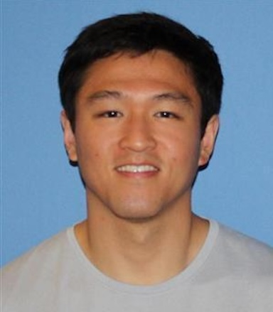
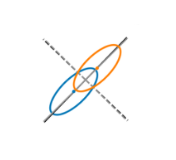
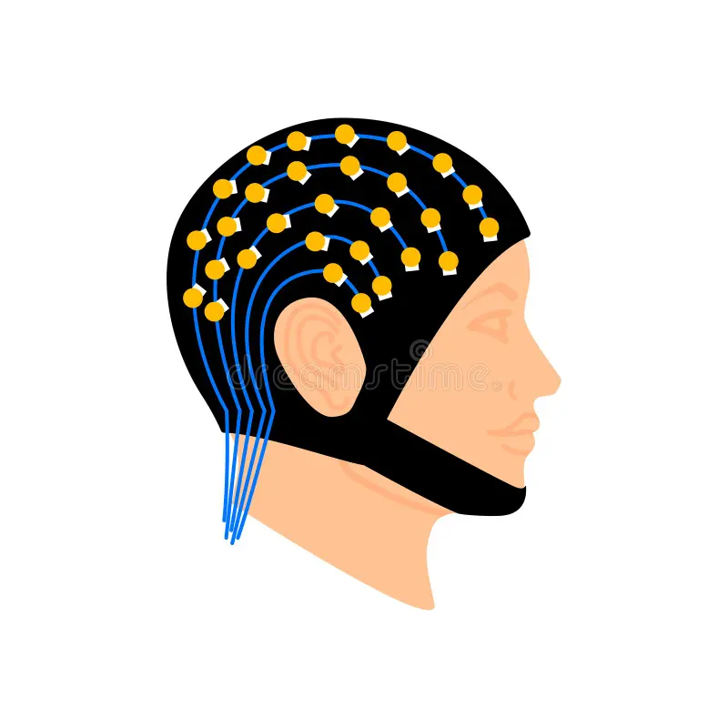
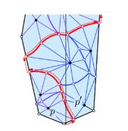

|
Caesar Dai
Hi, my name is Xufeng Caesar Dai (戴旭丰, Daì Xù Fēng).
I'm a first-year CS PhD student at University of Washington advised by
Rajesh Rao. My work will be at the intersection of
Brain-Computer Interface (BCI) and AI. I'm currently trying to figure out what exactly I want to work on...
I've been fortunate to work with some wonderful mentors! Before UW, I was a post-bacc RA at Brown University
with Matt Nassar, studying learning, memory, and decision making.
Dianna Xu introduced me to the world of CS and guided my senior thesis during my
undergrad time at Haverford College, where I earned a B.S. in CS and Math. I also had the chance to work with
David Mount and Auguste Gezalyan
through the REU-CAAR Program. I’m grateful to be supported by a
NSF CISE Graduate Fellowship.
I love to meet smart and passionate people :) feel free to reach me at
xdai1 (at) cs(dot) washington (dot) edu
Scholar /
Twitter /
Github
|

|
-
2025-09 — Starting PhD @ UW CSE, go dawgs!
|
|
|
|
|
Publications
* denotes co-authorship
|
|

|
Noise Correlation in Feature Learning
X, Dai; J, Kim; A, Bhandari; M, Nassar
CCN, 2024
paper
Explores how dynamic noise correlations - contextually enhanced correlations in neuronal firing - can focus learning on the most relevant feature dimensions.
|
|

|
Empowering CS students in EEG analysis: A review of ML algorithms for EEG datasets
N, Murungi*; M, Pham*; X, Dai*; X, Qu
ACM SIGKDD, 2023
paper
Systematic literature review that explores the utilization of machine learning (ML) algorithms for Electroencephalography (EEG) based Brain-Computer Interfaces (BCIs).
|
|

|
Software and analysis for dynamic Voronoi diagrams in the Hilbert metric
M, Bumpus*; X, Dai*; A, Gezalyan*; S, Muñoz*; R, Santhoshkumar*; S, Ye*; D, Mount
arxiv
Introduiced a dynamic visualization software for Voronoi diagrams in the Hilbert metric on user-specified convex polygons.
|
|
{kind=link}